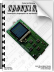

Documents
En aquest apartat podreu trobar diversos components relacionats amb el reproductor com per exemple fulls d'especificacions, documents tècnics i fins i tot el propi treball. Cadascun dels documents és propietat de l'autor original i conté la seva llicència corresponent.
Treball
Aquest document correspon al treball en versió PDF. El document es troba publicat sota la llicència GFDL 1.2, accessible clicant aquí.

Descarregar versió comprimida
Esquemes i circuits
Una de les atres coses més importants del treball ha estat el disseny del circuit final. En aquest DVD s'inclouen els originals (només de la versió 1.1) per tal que els pugueu editar, els fitxers Gerber/Excellon preparats per enviar a qualsevol fabricant i fins i tot els fitxers panelitzats. El programari necessari per visualitzar els originals o els fitxers Gerber/Excellon es troba a l'apartat de programari, tot i que també s'inclou una còpia en PDF per aquelles persones que només el desitgin visualitzar.
Edicions en PDF
Edicions originals
Edicions Gerber/Excellon
Scripts
Altres documents
Durant el procés de creació de l'openplayer vaig anar redactant alguns documents tècnics sobre temes que involucraven a l'openplayer. Alguns d'ells no estan totalment acabats i poden contenir errors, ja que no han estat revisats exhaustivament. Tot aquest conjunt serà polit i unit en un sol document durant els pròxims mesos i es podrà descarregar a la pàgina web http://www.teslabs.com/openplayer. La llista de títols publicats és la següent:
Llicències
Tant el codi com el treball es troben publicats sota llicències lliures. La del treball correspòn a la GFDL 1.2 (GNU Free Documentation License 1.2) que podeu descarregar clicant aquí. El codi utilitza una altra llicència de la FSF, concretament la GPLv3 (GNU General Public License version 3) que també podeu descarregar clicant aquí.
Fulls d'especificacions
En aquesta pàgina també s'inclouen tots els fulls d'especificacions de cada component de l'openplayer. Han estat classificats en carpetes segons la categoria dels components per tal d'oferir-ne una navegació més fàcil. Podeu visualitzar-los clicant aquí.
Documents tècnics
Durant el procés de programació del firmware vaig utilitzar diversos documents tècnics per ajudar-me a comprendre coses o fins i tot per obtenir exemples de codi per implementar certes funcions. Vaig decidir recollir-los tots per tal d'adjuntar-los al treball final així fent-los accessibles a aquelles persones interessades en la comprensió de les parts de l'openplayer en un sentit més profunt. Recordeu que cada document pertany al seu autor original i pot contenir llicència. Podeu visualitzar tots aquests documents clicant aquí.
|